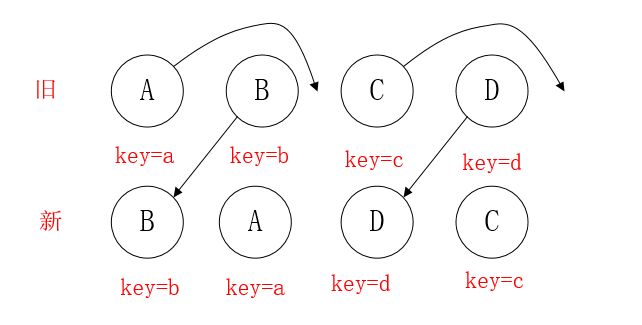
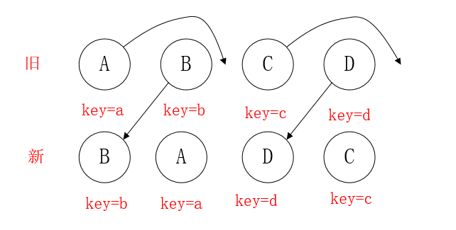

# React diff
# 传统 diff 算法
- 通过
循环递归对节点进行依次对比.
# React diff 算法
react 的 diff 有3种
Tree Diff: Web UI中DOM节点跨层级的移动操作特别少，可以忽略不计Component Diff:- 拥有
相同类的俩个组件, 将会生成相似的树形结构 - 拥有
不同类的俩个组件, 将会生成不同的树形结构
- 拥有
Element Diff: 对于同一层级的一组子节点，通过唯一id区分。
tree diff
- React通过updateDepth对Virtual DOM树进行层级控制。
- 对树分层比较，两棵树 只对同一层次节点进行比较。如果该节点不存在时，则该节点及其子节点会被完全删除，不会再进一步比较。
- 只需遍历一次，就能完成整棵DOM树的比较。

- 那么问题来了，如果DOM节点出现了跨层级操作,diff会咋办呢？
- 答：diff只简单考虑同层级的节点位置变换，如果是跨层级的话，只有
创建节点和删除节点的操作。 - 如上图所示，以A为根节点的整棵树会被重新创建，而不是移动，因此官方建议不要进行DOM节点跨层级操作，可以通过CSS隐藏、显示节点，而不是真正地移除、添加DOM节点。
- 答：diff只简单考虑同层级的节点位置变换，如果是跨层级的话，只有
component diff
- React对不同的组件间的比较，有三种策略
- 同一类型的两个组件，按原策略（层级比较）继续比较Virtual DOM树即可。
- 同一类型的两个组件，组件A变化为组件B时，可能Virtual DOM没有任何变化，如果知道这点（变换的过程中，Virtual DOM没有改变），可节省大量计算时间，所以 用户 可以通过 shouldComponentUpdate() 来判断是否需要 判断计算。
- 不同类型的组件，将一个（将被改变的）组件判断为dirty component（脏组件），从而 替换整个组件的所有节点。
- 注意：如果组件D和组件G的结构相似，但是 React判断是 不同类型的组件，则不会比较其结构，而是删除 组件D及其子节点，创建组件G及其子节点。
- React对不同的组件间的比较，有三种策略
element diff
- 当节点处于同一层级时，diff提供三种节点操作：
删除、插入、移动。 插入：组件 C 不在集合（A,B）中，需要插入删除：- （1）组件 D 在集合（A,B,D）中，但 D的节点已经更改，不能复用和更新，所以需要删除 旧的 D ，再创建新的。
- （2）组件 D 之前在 集合（A,B,D）中，但集合变成新的集合（A,B）了，D 就需要被删除。
移动：组件D已经在集合（A,B,C,D）里了，且集合更新时，D没有发生更新，只是位置改变，如新集合（A,D,B,C），D在第二个，无须像传统diff，让旧集合的第二个B和新集合的第二个D 比较，并且删除第二个位置的B，再在第二个位置插入D，而是 （对同一层级的同组子节点） 添加唯一key进行区分，移动即可。- 重点说下移动的逻辑：
- 情形一：新旧集合中存在相同节点但位置不同时，如何移动节点

- (1) 看着上图的 B，React先从新中取得B，然后判断旧中是否存在相同节点B，当发现存在节点B后，就去判断是否移动B。
- B在旧 中的index=1，它的lastIndex=0，不满足 index < lastIndex 的条件，因此 B 不做移动操作。此时，一个操作是，lastIndex=(index,lastIndex)中的较大数=1.
- 注意：lastIndex有点像浮标，或者说是一个map的索引，一开始默认值是0，它会与map中的元素进行比较，比较完后，会改变自己的值的（取index和lastIndex的较大数）。
- （2）看着 A，A在旧的index=0，此时的lastIndex=1（因为先前与新的B比较过了），满足index<lastIndex，因此，对A进行移动操作，此时lastIndex=max(index,lastIndex)=1。
- (3) 看着D，同（1），不移动，由于D在旧的index=3，比较时，lastIndex=1，所以改变lastIndex=max(index,lastIndex)=3
- (4) 看着C，同（2），移动，C在旧的index=2，满足index<lastIndex（lastIndex=3），所以移动。
- 由于C已经是最后一个节点，所以diff操作结束。
- 情形二：新集合中有新加入的节点，旧集合中有删除的节点
- （1）B不移动，不赘述，更新l astIndex=1
- （2）新集合取得 E，发现旧不存在，故在 lastIndex=1的位置 创建E，更新lastIndex=1
- （3）新集合取得C，C不移动，更新lastIndex=2
- （4）新集合取得A，A移动，同上，更新lastIndex=2
- （5）新集合对比后，再对旧集合遍历。判断 新集合 没有，但 旧集合 有的元素（如D，新集合没有，旧集合有），发现 D，删除D，diff操作结束。
- diff的不足与待优化的地方 看图的 D，此时D不移动，但它的index是最大的，导致更新lastIndex=3，从而使得其他元素A,B,C的index<lastIndex，导致A,B,C都要去移动。 理想情况是只移动D，不移动A,B,C。因此，在开发过程中，尽量减少类似将最后一个节点移动到列表首部的操作，当节点数量过大或更新操作过于频繁时，会影响React的渲染性能。
- 情形一：新旧集合中存在相同节点但位置不同时，如何移动节点

- 当节点处于同一层级时，diff提供三种节点操作：